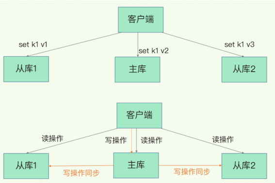
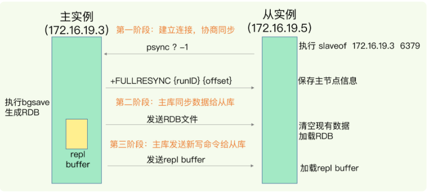
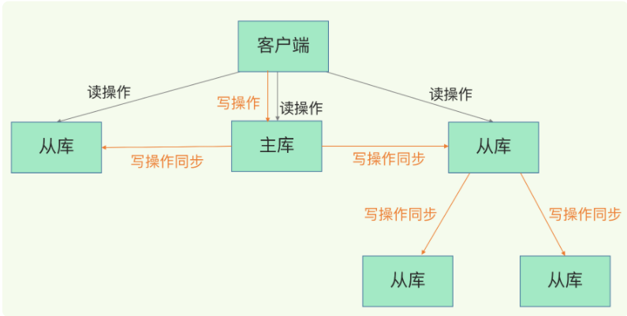
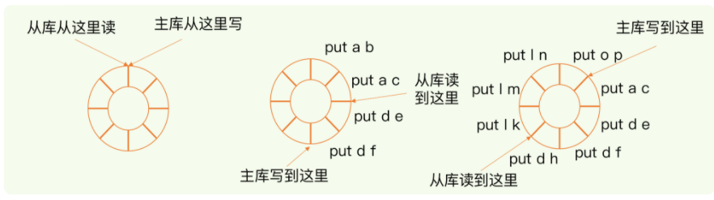
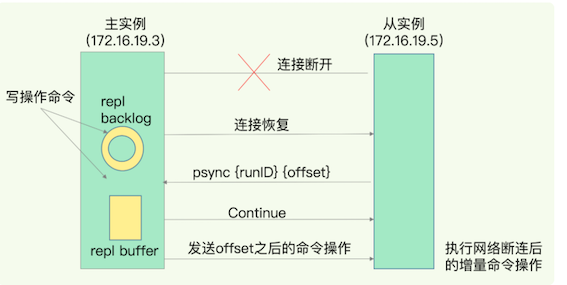

第六节 数据同步：主从库数据一致
如果 Redis 发生了宕机，它们可以分别通过回放日志AOF 和重新读入 RDB 文件的方式恢复数据，从而保证尽量少丢失数据，提升可靠性
我们在实际使用时只运行了一个 Redis 实例，那么，如果这个实例宕机了，它在恢复期间，是无法服务新来的数据存取请求的。
Redis 具有高可靠性
- 一是数据尽量少丢失
- 二是服务尽量少中断
AOF 和 RDB 保证了前者，而对于后者，Redis 的做法就是增加副本冗余量，将一份数据同时保存在多个实例上
即使有一个实例出现了故障，需要过一段时间才能恢复，其他实例也可以对外提供服务，不会影响业务使用。
1、Redis主从库模式
Redis 提供了主从库模式，以保证数据副本的一致，主从库之间采用的是读写分离的方式。
- 读操作：主库、从库都可以接收；
- 写操作：首先到主库执行，然后，主库将写操作同步给从库。

1-1 为什么采用读写分离
不管是主库还是从库，都能接收客户端的写操作，那么，一个直接的问题就是：
如果客户端对同一个数据（例如 k1）前后修改了三次，每一次的修改请求都发送到不同的实例上，在不同的实例上执行，那么，这个数据在这三个实例上的副本就不一致了（分别是 v1、v2 和 v3）。在读取这个数据的时候，就可能读取到旧的值。
如果我们非要保持这个数据在三个实例上一致，就要涉及到加锁、实例间协商是否完成修改等一系列操作，但这会带来巨额的开销，当然是不太能接受的。
而主从库模式一旦采用了读写分离，所有数据的修改只会在主库上进行，不用协调三个实例。主库有了最新的数据后，会同步给从库，这样，主从库的数据就是一致的。
2、主从库间如何进行第一次同步？
当我们启动多个 Redis 实例的时候，它们相互之间就可以通过 replicaof（Redis 5.0 之前使用 slaveof）命令形成主库和从库的关系，之后会按照三个阶段完成数据的第一次同步。
例如，现在有实例 1（ip：172.16.19.3）和实例 2（ip：172.16.19.5），我们在实例 2 上执行以下这个命令后，实例 2 就变成了实例 1 的从库，并从实例 1 上复制数据：
replicaof 172.16.19.3 6379
2-1 主从库间数据第一次同步的三个阶段

第一阶段是主从库间建立连接、协商同步的过程，主要是为全量复制做准备。
在这一步，从库和主库建立起连接，并告诉主库即将进行同步，主库确认回复后，主从库间就可以开始同步了。
具体来说，从库给主库发送 psync 命令，表示要进行数据同步，主库根据这个命令的参数来启动复制。
1. psync 命令包含了主库的 runID 和复制进度 offset 两个参数。
runID，是每个 Redis 实例启动时都会自动生成的一个随机 ID，用来唯一标记这个实例。当从库和主库第一次复制时，因为不知道主库的 runID，所以将 runID 设为“？”。offset，此时设为-1，表示第一次复制。
psync ? -1
2.主库收到 psync 命令后，会用 FULLRESYNC 响应命令带上两个参数：
主库 runID 和主库目前的复制进度 offset，返回给从库。从库收到响应后，会记录下这两个参数。
FULLRESYNC {runID} {offset}
FULLRESYNC 响应表示第一次复制采用的全量复制，也就是说，主库会把当前所有的数据都复制给从库。
第二阶段，主库将所有数据同步给从库。从库收到数据后，在本地完成数据加载。
这个过程依赖于内存快照生成的 RDB 文件。
- 主库执行 bgsave 命令，生成 RDB 文件，接着将文件发给从库。
- 库接收到 RDB 文件后，会先清空当前数据库，然后加载 RDB 文件。
- 这是因为从库在通过 replicaof 命令开始和主库同步前，可能保存了其他数据。为了避免之前数据的影响，从库需要先把当前数据库清空。
在主库将数据同步给从库的过程中，主库不会被阻塞，仍然可以正常接收请求。
这些请求中的写操作并没有记录到刚刚生成的 RDB 文件中。为了保证主从库的数据一致性，主库会在内存中用专门的 replication buffer，记录 RDB 文件生成后收到的所有写操作。
第三个阶段，主库会把第二阶段执行过程中新收到的写命令，再发送给从库
当主库完成 RDB 文件发送后，就会把此时 replication buffer 中的修改操作发给从库，从库再重新执行这些操作。这样一来，主从库就实现同步了
3、主从级联模式分担全量复制时的主库压力
一次全量复制中，对于主库来说，需要完成两个耗时的操作：生成 RDB 文件和传输 RDB 文件。
- 如果从库数量很多，而且都要和主库进行全量复制的话，就会导致主库忙于 fork 子进程生成 RDB 文件，进行数据全量同步。
- fork 这个操作会阻塞主线程处理正常请求，从而导致主库响应应用程序的请求速度变慢。
- 传输 RDB 文件也会占用主库的网络带宽，同样会给主库的资源使用带来压力。
3-1 “主 - 从 - 从”模式分担主库压力
通过“主 - 从 - 从”模式将主库生成 RDB 和传输 RDB 的压力，以级联的方式分散到从库上。
- ，我们在部署主从集群的时候，可以手动选择一个从库（比如选择内存资源配置较高的从库），用于级联其他的从库
- 再选择一些从库（例如三分之一的从库），在这些从库上执行如下命令，让它们和刚才所选的从库，建立起主从关系。
replicaof 所选从库的IP 6379
这些从库就会知道，在进行同步时，不用再和主库进行交互了，只要和级联的从库进行写操作同步就行了，这就可以减轻主库上的压力，

一旦主从库完成了全量复制，它们之间就会一直维护一个网络连接，主库会通过这个连接将后续陆续收到的命令操作再同步给从库，这个过程也称为基于长连接的命令传播，可以避免频繁建立连接的开销。
这个过程中存在着风险点，最常见的就是网络断连或阻塞。如果网络断连，主从库之间就无法进行命令传播了，从库的数据自然也就没办法和主库保持一致了，客户端就可能从从库读到旧数据
3、主从库间网络断了怎么办？
在 Redis 2.8 之前，如果主从库在命令传播时出现了网络闪断，那么，从库就会和主库重新进行一次全量复制，开销非常大。
3-1 增量复制
从 Redis 2.8 开始，网络断了之后，主从库会采用增量复制的方式继续同步。
和全量复制的不同：全量复制是同步所有数据，而增量复制只会把主从库网络断连期间主库收到的命令，同步给从库。
那么，增量复制时，主从库之间具体是怎么保持同步的呢？这里的就在于 repl_backlog_buffer 这个缓冲区。
主库一直在写入repl_backlog_buffer，当从库断连又重连之后，通过psync命令告诉主库自己的slave_repl_offset，然后主库根据自己的master_repl_offset和slave_repl_offset来判断是需要全量同步还是把两者之间的命令增量同步给从库（同步的方式就是通过主库与每个从库建立连接之后的这个所谓的replication buffer）
repl_backlog_buffer 是一个环形缓冲区，主库会记录自己写到的位置，从库则会记录自己已经读到的位置。
3-2 主库偏移
- 刚开始的时候，主库和从库的写读位置在一起，这算是它们的起始位置
- 随着主库不断接收新的写操作，它在缓冲区中的写位置会逐步偏离起始位置，我们通常用偏移量来衡量这个偏移距离的大小
- 对主库来说，对应的偏移量就是
master_repl_offset - 主库接收的新写操作越多，这个值就会越大。
3-3 从库偏移
- 从库在复制完写操作命令后，它在缓冲区中的读位置也开始逐步偏移刚才的起始位置，此时，从库已复制的偏移量
slave_repl_offset也在不断增加。 - 正常情况下，这两个偏移量基本相等。

- 主从库的连接恢复之后，从库首先会给主库发送
psync命令，并把自己当前的slave_repl_offset发给主库，主库会判断自己的master_repl_offset和slave_repl_offset之间的差距。 - 在网络断连阶段，主库可能会收到新的写操作命令，所以，一般来说，
master_repl_offset会大于slave_repl_offset。 - 此时，主库只用把
master_repl_offset和slave_repl_offset之间的命令操作同步给从库就行。 - 主库和从库之间相差了
put d e和put d f两个操作，在增量复制时，主库只需要把它们同步给从库，就行了

3-4 repl_backlog_size
因为 repl_backlog_buffer 是一个环形缓冲区，所以在缓冲区写满后，主库会继续写入，此时，就会覆盖掉之前写入的操作。
如果从库的读取速度比较慢，就有可能导致从库还未读取的操作被主库新写的操作覆盖了，这会导致主从库间的数据不一致。
避免这一情况
一般而言，我们可以调整 repl_backlog_size 这个参数。这个参数和所需的缓冲空间大小有关。缓冲空间的计算公式是：
缓冲空间大小 = 主库写入命令速度 * 操作大小 - 主从库间网络传输命令速度 * 操作大小
在实际应用中，考虑到可能存在一些突发的请求压力，我们通常需要把这个缓冲空间扩大一倍
即 repl_backlog_size = 缓冲空间大小 * 2，这也就是 repl_backlog_size 的最终值。
举个栗子🌰
- 如果主库每秒写入
2000个操作，每个操作的大小为2KB - 网络每秒能传输
1000个操作，那么，有1000个操作需要缓冲起来，这就至少需要2MB的缓冲空间。 - 否则，新写的命令就会覆盖掉旧操作了。为了应对可能的突发压力，我们最终把
repl_backlog_size设为4MB。
增量复制时主从库的数据不一致风险就降低了。不过，如果并发请求量非常大，连两倍的缓冲空间都存不下新操作请求的话，此时，主从库数据仍然可能不一致。
针对这种情况，
- 一方面，你可以根据 Redis 所在服务器的内存资源再适当增加
repl_backlog_size值，比如说设置成缓冲空间大小的 4 倍， - 另一方面，你可以考虑使用切片集群来分担单个主库的请求压力。
4、本节小结
Redis 的主从库同步的基本原理，总结来说，有三种模式：全量复制、基于长连接的命令传播，以及增量复制
全量复制虽然耗时，但是对于从库来说，如果是第一次同步，全量复制是无法避免的
- 一个 Redis 实例的数据库不要太大，一个实例大小在几 GB 级别比较合适，这样可以减少 RDB 文件生成、传输和重新加载的开销
- 为了避免多个从库同时和主库进行全量复制，给主库过大的同步压力，我们也可以采用“主 - 从 - 从”这一级联模式，来缓解主库的压力。
- 长连接复制是主从库正常运行后的常规同步阶段。在这个阶段中，主从库之间通过命令传播实现同步。
- 期间如果遇到了网络断连，增量复制就派上用场了。
- 留意一下
repl_backlog_size这个配置参数。- 如果它配置得过小，在增量复制阶段，可能会导致从库的复制进度赶不上主库，进而导致从库重新进行全量复制。
- 所以，通过调大这个参数，可以减少从库在网络断连时全量复制的风险。
4-1 本节亮点
- Redis采用读写分离的好处：避免了加锁，实例间协商是否完成修改等复杂操作
- 全量同步的发生时机：首次上线 和 从库的环形缓冲区位置标识被覆盖
- 增量同步保障机制依赖于一个特殊的数据结构：环形缓冲区
- 首次同步分为三个阶段，①：建立连接，②：同步RDB文件，③：同步增量数据
- 全量同步需要主机fork子进程，产生全量RDB文件，并发送，为了减轻主机的压力，从机之间也可用互相同步
- 增量同步可以缓解主机全量同步的压力，它需要特殊机制保障：
replication buffer，环形缓冲区，master_repl_offset，slave_repl_offset - 从机的同步位置标识，在环形缓冲区被覆盖后，会触发新的一轮全量同步，所
repl_backlog_buffer的大小是redis重要的调优参数 - 主从同步有三种机制：全量同步，基于长链接的命令传播，增量同步
4-2 每节一问
主从库间的数据复制同步使用的是 RDB 文件，前面我们学习过，AOF 记录的操作命令更全，相比于 RDB 丢失的数据更少。那么，为什么主从库间的复制不使用 AOF 呢？
- RDB读取快，这样从库可以尽快完成RDB的读取，然后入去消费replication buffer的数据。如果是AOF的话，AOF体积大，读取慢，需要更大的replication buffer，如果一个主节点的从节点多的话，就需要更大的内存去处理；
- AOF文件是append追加模式，同时读写需要考虑并发安全问题，并且AOF是文本文件，体积较大，浪费网络带宽。